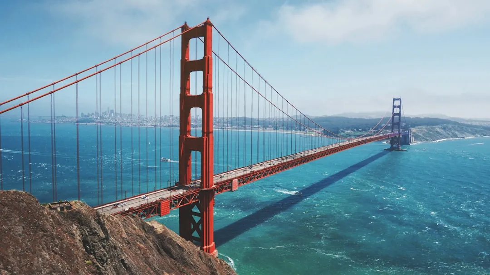

California Cities
California's cities stretch nearly 800 miles from San Francisco Bay to the Mexican border, and no two feel alike — foggy hills, freeway sprawl, beach boardwalks, mission-era plazas. This hub links nine full city guides, each covering sights, food, transport and day trips. Use it two ways: pick one base city for a 3–4 day stay, or chain two or three cities into a one-way road trip. Distances decide everything — San Francisco to Los Angeles runs 380 miles (6 hours by car, 90 minutes by air), while the coastal towns sit 1–2 hours apart. Spring (March–May) and fall (September–October) bring the easiest weather statewide, with thinner crowds and lower hotel rates than summer. Start with the question that matters most — big-city museums and dining, or slow coastal mornings — then follow the links below.

Guides in this section
San Francisco
Seven miles square and packed with hills, San Francisco rewards walkers who dress for microclimates — summer highs hover near 65°F (18°C) with fog rolling in most afternoons. Cable car rides run about $8 a trip, and the Powell–Hyde line pairs with Fisherman's Wharf in one outing. BART reaches downtown from the airport in roughly 30 minutes. Tip: buy a multi-day transit pass and tackle one neighborhood per half-day.
Los Angeles
Los Angeles sprawls across 500 square miles, so plan by cluster rather than by checklist. Griffith Observatory charges no entry fee and delivers the city's best free view — arrive before 11am to beat the hilltop lot. The Metro day cap costs around $5 and links downtown, Hollywood and Santa Monica by rail. Tip: group beach days (Santa Monica, Venice) separately from downtown–Hollywood days to cut freeway time.
San Diego
Seventy miles of coastline frame California's most even-tempered city, with daytime highs near 70°F (21°C) in most months. Balboa Park spreads across 1,200 acres with 17 museums, and the famous zoo sits at its heart — combination passes cut per-attraction costs. Ferries cross to Coronado in 15 minutes. Tip: base near Old Town or the Gaslamp for trolley access, and allow a full day for the park alone.
Santa Barbara
Ninety minutes up the coast from Los Angeles, Santa Barbara pairs red-tile Spanish architecture with a working waterfront. The county courthouse tower gives a free 360-degree view, and State Street runs a mile of shops from downtown to the beach. Ferries to Channel Islands National Park leave from Ventura, 30 minutes south. Tip: the Funk Zone's tasting rooms pour local Pinot Noir and Chardonnay steps from the sand.
Santa Monica
Three and a half miles of sand meet a classic pier (opened 1909) with a solar-powered Ferris wheel and an aquarium underneath. The Third Street Promenade runs three car-free blocks of shops and street performers, and the beach bike path rolls 2 flat miles south to Venice. The Expo Line reaches downtown LA in about 45 minutes. Tip: rent bikes by the hour and ride the coast early, before the afternoon breeze picks up.
San Luis Obispo
Halfway between Los Angeles and San Francisco, San Luis Obispo runs on college-town time with a famous Thursday-night farmers' market spanning five blocks of Higuera Street. Bubblegum Alley packs two million chewed pieces into a 70-foot passage, and Edna Valley wineries pour Pinot ten minutes south. Amtrak's Coast Starlight stops downtown. Tip: Thursday arrivals catch the market at its liveliest — book dinner nearby and walk.
Pasadena
Ten miles northeast of downtown LA, Pasadena pairs parade fame with serious culture. The Rose Parade rolls 5.5 miles every January 1, while the Norton Simon Museum holds European masters steps from Colorado Boulevard. The Huntington's gardens next door need a half-day on their own. The Metro A Line reaches Old Pasadena from downtown in 20 minutes. Tip: visit parade floats up close at the viewing stand on the afternoons of January 1–2.
Sacramento
The state capital since 1854, Sacramento anchors the Gold Country with free Capitol tours and the riverfront Old Sacramento district. The Crocker Art Museum ranks as the oldest on the West Coast, and the farm-to-fork dining scene draws on surrounding Delta farmland. Downtown sits 90 minutes northeast of San Francisco by car or Capitol Corridor train. Tip: pair the Capitol and Crocker in one walkable morning, then cross the Tower Bridge at sunset.
Catalina Island
A Mediterranean-style island escape an hour off the SoCal coast — Avalon, Two Harbors and the landmark theater and ballroom. Ferries from Long Beach and Dana Point cross in 60–90 minutes, with adult round trips near $80. Private cars are restricted, so visitors walk, bike or ride golf carts. Tip: book the bison safari or zip line ahead on summer weekends, when day boats sell out.
Stringing Cities Into One Trip
One-way itineraries beat backtracking. Fly into San Francisco and out of Los Angeles (or the reverse) to cover both cities plus a coastal stop without repeating 380 miles of inland freeway. A classic 7-day chain runs 3 days in San Francisco, 1 night in Monterey or San Luis Obispo, and 3 days in Los Angeles. Rental cars returned to a different city carry a one-way fee, often $50–$150 — compare that against a $100–$180 one-way flight on the same route. Coastal Highway 1 adds 2–3 hours over the inland freeway but earns it in scenery; check for closures before committing to the coast road.